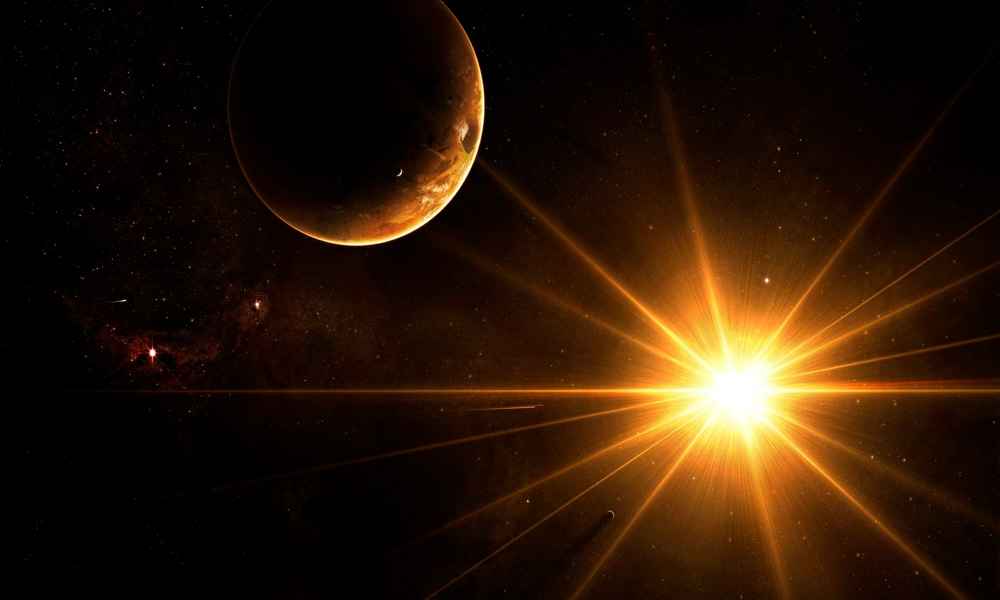

Домашняя работа №2
Рассказ о звездах

Существует мнение, что звёзды — основа жизни во Вселенной.
Отчасти эту теорию можно считать подтверждённой, ведь есть как минимум одна звезда, без которой жизни бы не было.
Это наше Солнце, которое с поверхности Земли кажется таким тёплым жёлтым шариком

Интересные факты о звёздах
- Ближайшая к нам звезда — Проксима Центавра, до неё 4,2 световых года
- Солнце делает оборот вокруг центра Галактики примерно за двести миллионов лет
- Белый карлик — финальная стадия жизни небольших звёзд вроде нашего Солнца. Чёрная дыра — финальная стадия жизни звёзд намного более массивных
- Наибольшее число звёзд в наблюдаемой Вселенной — красные карлики/li>
- Красные карлики — звёзды-долгожители, срок их жизни может составлять до десяти триллионов лет
- Самые холодные звёзды — красные, самые горячие — голубые
- Самая большая из известных звёзд — UY Щита, она в 1708 раз больше Солнца
Чтобы узнать больше фактов, кликните по этой ссылке